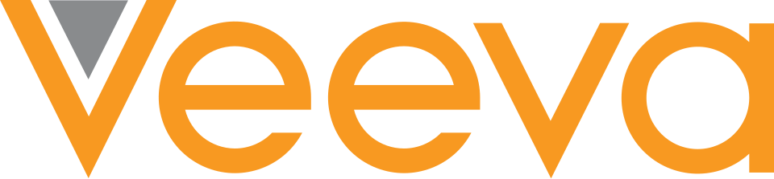

Veeva Systems
Veeva Systems는 생명과학 산업에 클라우드 컴퓨팅 소프트웨어, 데이터, 컨설팅 서비스를 제공하는 미국 기업이다. 의약품 개발과 제약 제조의 전 과정을 추적하는 제품을 공급한다.
최종 업데이트

Veeva Systems는 어떤 브랜드인가
이 회사는 미국 플레전턴에 본사를 두고 생명과학 기업의 업무를 지원하는 소프트웨어와 데이터 서비스를 제공한다. 제품의 주된 용도는 의약품 개발과 제약 제조에 관한 모든 측면을 추적하는 것이다.
고객은 1,552곳이며 Bayer, Boehringer Ingelheim, Eli Lilly and Company, Gilead Sciences, Merck & Co., Novartis 등이 포함된다. 2013년 뉴욕증권거래소 기업공개를 통해 상장회사가 됐다.
2021년에는 상장회사 가운데 처음으로 공익법인으로 전환했다.
Veeva Systems는 어떻게 시작되고 성장했나
이 회사는 2007년 Peter Gassner와 Matt Wallach가 설립했으며 미국 플레전턴에 본사를 두었다. 2011년 생명과학 산업을 위한 콘텐츠 관리 시스템인 Veeva Vault를 선보였다.
2013년 10월 뉴욕증권거래소에서 기업공개를 진행하며 상장회사가 됐다. 2021년 2월에는 상장회사 중 처음으로 공익법인으로 전환했다.
2025년에는 경쟁사인 Salesforce와의 파트너십을 종료했다.
Veeva Systems의 브랜드 아이덴티티는 무엇인가
생명과학 산업에 집중해 의약품 개발과 제약 제조의 전 과정을 추적하는 클라우드 소프트웨어와 데이터를 함께 제공한다.
Veeva Systems의 대표 제품과 서비스는 무엇인가
사업은 생명과학 산업을 위한 클라우드 컴퓨팅 소프트웨어, 데이터, 컨설팅 서비스로 구성된다. 제품은 의약품 개발과 제약 제조에 관련된 모든 측면을 추적하는 데 사용되며, 콘텐츠 관리 시스템인 Veeva Vault도 제공한다.
고객에는 Alkermes plc, Alnylam Pharmaceuticals, bluebird bio, Idorsia를 비롯한 생명과학 및 제약 기업이 포함된다. Bayer, Boehringer Ingelheim, Eli Lilly and Company, Gilead Sciences, Merck & Co., Novartis도 제품과 서비스를 이용한다.
Veeva Systems는 지금 어떤 상태인가
이 회사는 뉴욕증권거래소 기업공개를 거친 상장회사이며 2021년 공익법인으로 전환했다. 고객은 Bayer와 Novartis 등을 포함해 1,552곳이다.
2025년에는 경쟁사 Salesforce와의 파트너십을 끝냈다.
Veeva Systems 로고는 어떻게 변해왔나
자주 묻는 질문
Veeva Systems는 어느 나라 브랜드인가요?
Veeva Systems는 미국의 헬스·제약 브랜드입니다.
Veeva Systems는 언제 설립되었나요?
Veeva Systems는 2007년 설립되었습니다.
Veeva Systems의 브랜드 아이덴티티는 무엇인가요?
생명과학 산업에 집중해 의약품 개발과 제약 제조의 전 과정을 추적하는 클라우드 소프트웨어와 데이터를 함께 제공한다.
Veeva Systems의 대표 제품은 무엇인가요?
사업은 생명과학 산업을 위한 클라우드 컴퓨팅 소프트웨어, 데이터, 컨설팅 서비스로 구성된다.
Veeva Systems는 현재 어떤 상태인가요?
이 회사는 뉴욕증권거래소 기업공개를 거친 상장회사이며 2021년 공익법인으로 전환했다.
Veeva Systems의 창업자는 누구인가요?
Veeva Systems의 창업자는 Peter Gassner입니다(위키데이터 기준).
Veeva Systems의 본사는 어디에 있나요?
Veeva Systems의 본사는 플레전턴에 있습니다(위키데이터 기준).
출처와 검증
Veeva Systems 관련 참고: 공식 웹사이트 · 위키데이터 Q24204493 · 영어 위키백과. 브랜드명은 한글과 원어를 함께 표기하되 데이터에 없는 표기는 만들지 않습니다. 기원 국가·설립연도는 검수된 정의문에서 확인된 값을 우선하고, 없을 때만 공식 웹사이트 URL이 일치하는 위키데이터 개체의 값을 씁니다. 위키데이터 값은 2026-09-12 기준입니다.